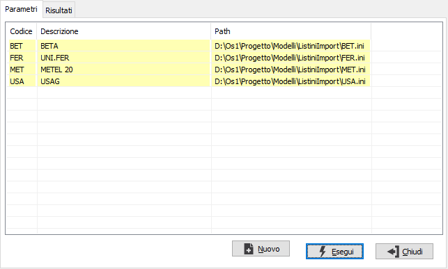
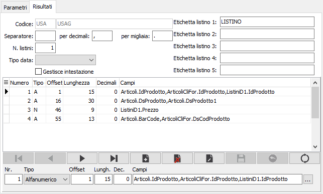
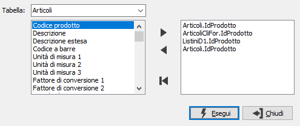

Definizioni import listini
Il programma consente di manutenere le informazioni relative a formati di importazioni per listini esterni; le informazioni relative ad ogni formato vengono alla fine salvate su di un apposito file di configurazione.
La maschera si compone di due sezioni: Parametri e Risultati. La sezione Parametri visualizza i formati di importazione presenti e consente di modificarli oppure di inserirne di nuovi, viene visualizzato anche il percorso sul disco del file di configurazione relativo al formato.

La sezione Risultati contiene le specifiche inerenti il formato di importazione selezionato e ne consente la modifica; i campi presenti sono gli stessi anche in caso di inserimento di un nuovo formato di importazione; in quest'ultimo caso, prima di procedere ad inserire i dati viene richiesto un percorso su cui salvare il file relativo alle impostazioni che si inseriranno.

CODICE E DESCRIZIONE: codice e descrizione che identificano il tipo di importazione che sarà utilizzata. I campi sono attivi solo in inserimento.
SEPARATORE DI CAMPO: indicare il separatore dei campi, se presente.
SEPARATORE PER DECIMALI: indicare il separatore dei decimali, se presente.
SEPARATORE PER MIGLIAIA: indicare il separatore delle migliaia, se presente.
NUMERO LISTINI: indicare il numero di listini presenti all'interno del file di importazione.
TIPO DATA: indicare il formato della data.
GESTIONE INTESTAZIONE: identifica se nel file di importazione la prima riga contiene il nome dei campi (casella con segno di spunta).
ETICHETTE LISTINO: se inserite saranno visualizzate come etichetta dei campi listino in fase di importazione listini.
Nella parte inferiore deve essere definito il tracciato record delle righe che compongono il file dei dati da importare.
NUMERO: numero progressivo del campo.
TIPO: indicare la tipologia del campo: alfanumerico, data, numerico.
OFFSET: indicare l'offset (posizione in caratteri) del campo all'interno del record.
LUNGHEZZA: indicare la lunghezza in caratteri del campo.
DECIMALI: indicare l'eventuale numero di decimali, valido solo per campi numerici.
CAMPI: indicare l'elenco dei campi, relativo alle tabelle di OS1, che il campo del file di importazione dovrà aggiornare. Per facilitare l'operazione è possibile utilizzare il pulsante a lato oppure il tasto F11. Si accede alla seguente finestra dalla quale è possibile selezionare, per ogni tabella gestita, i campi desiderati utilizzando i tasti freccia oppure facendo doppio clic con il mouse sul nome del campo desiderato.
